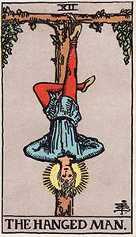
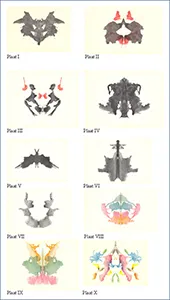
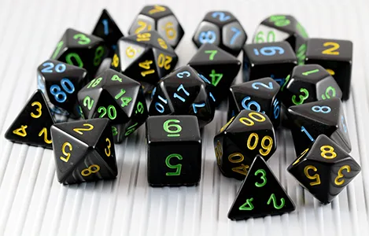
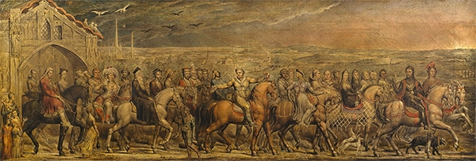
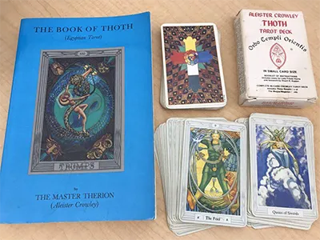
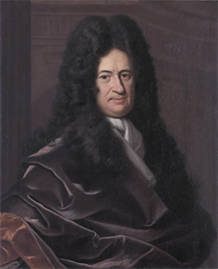
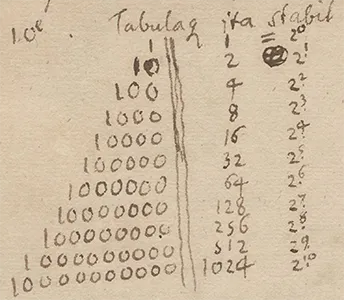
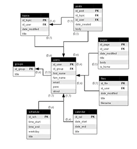
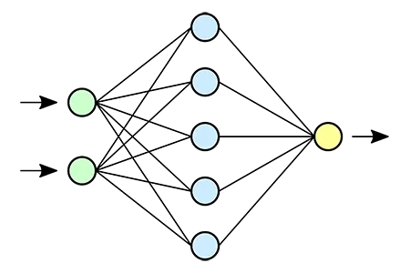

Explores the shift from literal fortune-telling to contemporary therapeutic projection and secular mindfulness.
Modern Divination and Psychological Self-Discovery
The Secular Mirror

"The Hanged Man" (Trump XII) from the Rider-Waite-Smith Tarot Deck (1909), illustrated by Pamela Colman Smith under the direction of Arthur Edward Waite. Rather than predicting doom, modern secular card analysis targets the image as an explicit psychological prompt for shifting personal perspectives. Collection: Wikimedia Commons / Public Domain.
In the modern era, the utilization of Tarot has largely shifted away from predictive fortune-telling toward secular self-discovery and psychological reflection. Instead of viewing the cards as magical windows into a fixed future, contemporary practitioners use them as a structured tool for introspection.
Cognitive Projection and Mindfulness
When a modern user interacts with a Tarot layout, they are engaging in a process like psychological projection techniques (like the Rorschach inkblot test):

The complete set of ten original Rorschach inkblot test plates designed by Hermann Rorschach (1921). Occult historians and analysts explicitly parallel modern intuitive card layouts to visual projection tests, where the user reads internal subconscious dynamics onto abstract visual arrays. Collection: Wikimedia Commons / Public Domain.
The Random Catalyst: The randomized draw of a card forces the brain to look at a situation from an unexpected angle.
Breaking Cognitive Loops: If a person is stuck in a repetitive loop of stress or decision-making, pulling a card like The Hanged Man prompts them to consciously pause and view their dilemma from an inverted perspective.
Secular Rituals: For many, the act of pulling a "card of the day" functions as a tech-free mindfulness practice, providing a visual anchor for journaling, goal-setting, and emotional auditing.
Tarot’s Return to Gaming
Connects the inherent storytelling power of the deck to narrative mechanics in tabletop roleplaying games (TTRPGs) and game design.

Black polyhedral gaming dice array used for modular calculations in modern tabletop roleplaying systems. Photograph by Dark Elf Dice. Collection: Wikimedia Commons / CC BY-SA 4.0.
By combining 18th-century French esotericism, 19th-century British occultism, and 20th-century Jungian psychology, Tarot achieved its modern identity. Today, secular readers treat the cards as a psychological mirror. Much like Chaucer's medieval pilgrims sharing framework stories on the road, modern card layouts act as a personal storytelling catalyst—helping users map, unlock, and navigate their own subconscious "Fool’s Journey."

"Chaucer's Canterbury Pilgrims" (1808) rendered in pen and tempera on canvas by William Blake. The linear composition demonstrates the architectural framework of narrative tracking that directly inspired modern structural layout operations. Collection: Pollok House, Glasgow, Scotland / Public Domain.
The Decks That Shaped the Modern World
The Golden Dawn’s structural teachings were originally kept strictly secret under oath. However, prominent members eventually broke away or went public, creating the three foundational artistic architectures that define every single Tarot layout used in the 21st century:
1. The Rider-Waite-Smith (RWS) Architecture (1909)
Created by Arthur Edward Waite and drawn by Pamela Colman Smith, this is the most popular deck in history. Waite toned down the overt occult secrets to protect his vows but had Smith illustrate the Minor Arcana with rich, narrative scenes based directly on Golden Dawn meanings rather than blank geometric pips. Link: View RWS Gallery.
2. The Thoth Tarot Architecture (Published 1969)
Created by Aleister Crowley and painted by Lady Frieda Harris. This is a visually stunning, highly complex deck that explicitly showcases the Golden Dawn's astrological, alchemical, and Qabalah correspondences without hiding them under illustrations.

Card layout examples from the Crowley-Harris Thoth Tarot system. The structure integrates complex non-traditional color fields with explicit astrological glyphs. Photograph by Trang Tarot. Collection: Wikimedia Commons / CC BY-SA 4.0.
3. The Hermetic Tarot Architecture (Modern Revival)
Created by Godfrey Dowson, this highly detailed black-and-white deck is based explicitly and strictly on the exact astrological, angelic, and elemental details found in the Golden Dawn's original Book T manuscript.
Tarot & Witchery's video review of the Hermetic Tarot created by Godfrey Dawson.
Tarot & Witchery's video review of the Hermetic Tarot created by Godfrey Dawson.
The Tabletop Intersection: Tarot in Dungeons & Dragons (D&D)
The relationship between Tarot and tabletop roleplaying games is deeply baked into the history of the hobby, most famously seen in Dungeons & Dragons:
The Tarokka Deck: In D&D’s legendary gothic horror setting, Ravenloft (specifically the Curse of Strahd adventure), players encounter an in-game card system called the Tarokka. The Dungeon Master (DM) performs a live card layout at the table to algorithmically randomize the entire plot of the campaign—determining where magical artifacts are hidden, which non-player characters (NPCs) will ally with the party, and where the final boss battle will take place.
Instant NPC Blueprinting: Dungeon Masters frequently use a standard Tarot deck behind the scenes to instantly generate complex backstories. A DM can draw three cards to dynamically determine an NPC’s past trauma, current hidden motive, and destined downfall.
Character Alignment Mapping: Players can map their characters' developmental journeys against the classic Fool’s Journey. A rogue seeking redemption might find their personal arc perfectly mirrored by the progression from The Thief (Hermit reversed) to The Justice card.
Video of the Dungeons & Dragons Game Tarokka
Watch GameMaster explore Ravenloft with a Tarokka Deck DEEP DIVE!.
Video walkthrough demonstrating the 54-card gothic Tarokka system layout rules for D&D campaign randomizations.
GameMasters. (2026, June 17). Ravenloft The Horrors Within Tarokka Deck DEEP DIVE! [Video]. YouTube. Structural walkthrough and lore overview charting common deck ranks, high deck authorities, and prop cards.
Bridges the historical connection between ancient symbolic systems and early computer science logic, while examining how modern computer scientists leverage tarot imagery to test neural network capabilities.
Leibniz, Binary, and the I Ching Precedent

"Portrait of Gottfried Wilhelm Leibniz (1646–1716)" by Christoph Bernhard Francke. Leibniz credited his definitive calculation matrices to his study of ancient structural symbolic arrays. Collection: Herzog Anton Ulrich Museum, Braunschweig, Germany / Public Domain.
To understand how Tarot intersects with computer science, one must look at the foundational philosophy of computational thinking. In the late 17th century, mathematician Gottfried Wilhelm Leibniz invented the modern binary number system (the base-0 and base-1 logic that powers every computer processor today). Leibniz explicitly credited his breakthrough to his study of ancient symbolic systems—specifically the hexagrams of the Chinese I Ching. He realized that ancient humans had already built a functional system of processing complex global information using simple on/off, broken/unbroken binary data paths.

Original mathematical manuscript outlining historical binary notation systems by Gottfried Wilhelm Leibniz. Collection: Gottfried Wilhelm Leibniz Bibliothek, Hannover, Germany / Public Domain.
Structural Data Modeling: Tarot as a Relational Database
From a programmatic perspective, a Tarot deck is not an organic chaos; it is a highly structured, self-contained relational database system.

Standard Entity-Relationship Model (ERD) schematic outlining structured database architectural tables. Uploaded by user Wooptoo. Collection: Wikimedia Commons / Public Domain.
The Schema: The deck features strict entity constraints. The Major Arcana functions as a fixed index array of 22 distinct algorithmic states (numbered 0 to 21).
The Array Attributes: The Minor Arcana functions as a multi-dimensional array split across four strict data columns (the Suits) intersected by fourteen numerical rows (the Ranks).
System Mapping: Because of this inherent mathematical architecture, learning to build a digital Tarot layout engine is an industry-standard training project for software developers to master database queries, array manipulation, and responsive front-end state changes.
The Generative Frontier — Tarot as an AI Training Tool
Testing Multimodal AI Models
In modern artificial intelligence engineering, developers must train and test multimodal models—AI systems capable of processing both visual graphics and natural human language simultaneously. Tarot presents an incredibly difficult, high-level test for these models.
The Algorithmic Mirror: Training Challenges

Simplified logical mapping blueprint tracking data flow patterns inside an artificial neural network node array. Graphic designed by users Dake and Mysid. Collection: Wikimedia Commons / CC BY 1.0.
Computer scientists utilize Tarot decks as training and benchmarking tools for neural networks in three distinct ways:
Contextual Image Decoding: Standard computer vision models can easily look at a picture and identify "a woman" or "a lion." However, a Tarot card like Strength requires the AI to understand the complex, non-literal relationship between the woman and the lion, testing its capacity for abstract symbolic decoding.
Context-Dependent Semantic Analysis: In Large Language Models (LLMs), engineers use Tarot to test how well an AI can dynamically alter data based on surrounding inputs. A card's meaning changes completely depending on whether it is drawn upright or reversed, and whether it sits next to The Tower or The Sun. Training an AI to synthesize these layout variables tests its ability to track long-range dependencies and nuances in human sentiment.
The Human Mirror: Because AI architectures scrape the collective creative output of humanity to learn language, researchers view generative AI tools as a literal technological manifestation of Carl Jung's Collective Unconscious. When an AI generates a Tarot interpretation, it is not thinking; it is holding a digital mirror up to centuries of human art, philosophy, and cultural memory stored within its database weights.